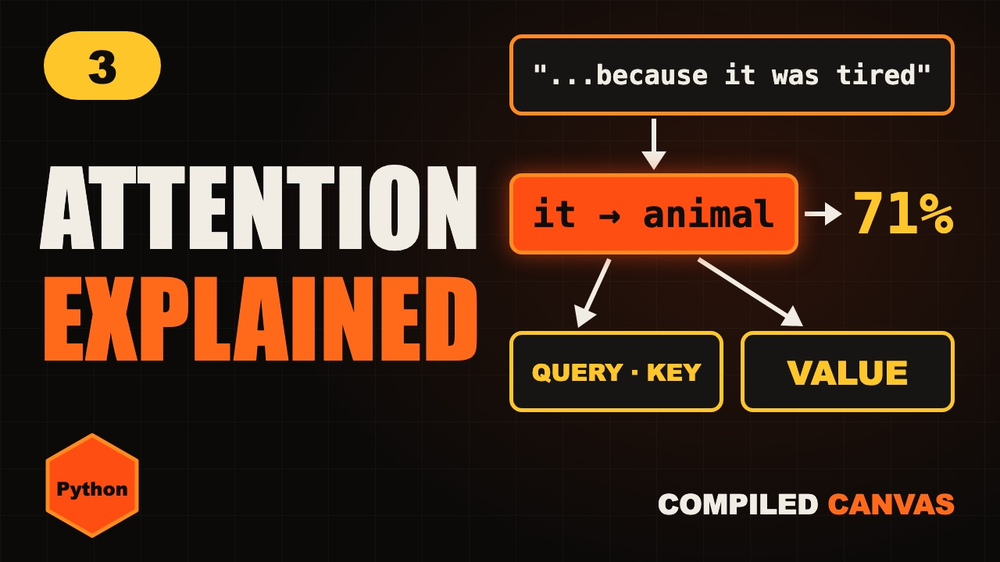

Home / Generative AI / Lesson 3
Lesson 3 · PythonTransformers and Attention Explained Simply
Transformers and the attention mechanism explained simply: queries, keys and values, with attention built in a few lines of Python.

2 hands-on demos and 1 Python program you can run on this page. Nothing to install.
1What does it mean?
Read this. The animal didn't cross the street because it was too tired.
What does it mean here? You knew instantly. The animal. A street can't be tired.
For a computer, this is hard. The trick that solved it is called attention. And it's the heart of every modern chatbot.
2The old way
Older language models read text one word at a time, like reading through a straw, carrying a small memory forward.
In a long sentence, the early words fade from that memory. By the word it, the animal is a blur.
They were also slow to train, because each word had to wait for the one before it.
In twenty seventeen, researchers at Google published a paper called Attention Is All You Need. It introduced the transformer. Every word looks at every other word, all at once.
3Attention
Here's the idea. Each word asks: which other words matter to me right now?
It gives every other word a score. For it, animal scores high, and street scores low.
Now change one word. The animal didn't cross the street because it was too wide. Now it means the street.
Same word, different meaning, decided by context. That's exactly what attention captures.
Switch the last word. Same sentence, but it now looks at a different word. That is attention at work.
4Query, key, value
Attention uses three vectors for every word. Think of searching for a video on YouTube.
The query is what you type in the search box. What am I looking for?
The key is like each video's title. What do I contain?
The value is the video itself. What I hand over if I'm chosen.
Match the query against every key to get scores. Softmax turns them into weights. Then blend the values with those weights. The word's meaning now includes its context.
These are the same numbers as attention.py below. With the query at [3, 0] you get its printed output: 0.71, 0.13, 0.16.
5Attention in Python
Edit the code and press Run to try it right here, or copy it and run python3 attention.py.
import numpy as np
q = np.array([3.0, 0.0]) # query for "it"
K = np.array([[0.9, 0.1], # animal
[0.1, 0.9], # street
[0.2, 0.2]]) # tired
V = np.array([[1, 0], [0, 1], [0.5, 0.5]])
scores = K @ q / np.sqrt(2)
w = np.exp(scores) / np.exp(scores).sum()
print(w.round(2)) # [0.71 0.13 0.16]
print((w @ V).round(2)) # [0.79 0.21][0.71 0.13 0.16] [0.79 0.21]
Here's attention in a few lines of Python. One query, for the word it.
Three keys, for animal, street and tired. And a value for each.
Score each key against the query, and divide by the square root of the size. That keeps the numbers steady.
Softmax gives the weights. Animal gets seventy one percent. Street gets thirteen.
Blend the values with those weights, and it now carries mostly the meaning of animal.
6The full transformer
A real model runs many attention heads side by side. Each one looks for something different. One for grammar, one for who did what, one for what it refers to.
Attention alone doesn't know word order, so each embedding also gets its position added in.
After attention, a small network refines each word. That pair is one layer, and big models stack dozens of layers.
And because every word is handled at the same time, transformers train fast on GPUs. That's what made today's huge models possible.
Your turn. Pause. I put the cup on the table because it was hot. Which word should it attend to most?
The cup. Tables aren't usually hot.
7Cheat sheet
- Old way: one word at a time
- Transformer: all words at once
- Attention: who matters to me?
- Query, key, value
- Scores → softmax → blend
- Stack dozens of layers
8Quick quiz
1. Which paper introduced the transformer?
Attention Is All You Need, in twenty seventeen.
2. Query times key gives you what?
A score for how much that word matters.
3. Why do transformers train faster than older models?
They handle every word at the same time.
9Homework
Your homework. Run the attention program from this lesson. All the Python code is on this page, ready to copy. Then change the query, and make street win instead of animal. And tell me in the comments: which values did you use?